| 今日の主なイベント |
| 大阪散策 |
| 大阪ドーム 野球観戦 |
| DT大阪公演 2日目 |
| 朝 |
10:10
チェックアウト。荷物を預かってもらう。
ゴミは自分で出すシステム。ちょっと肌寒い。
10:15
近くの喫茶店に入って、モーニングを食べる。
他に客がいなかった。
| 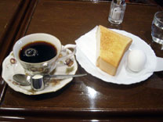 |
| モーニング |
| IMP HALLへ |
地下鉄1日乗車券を購入。850円。
4回乗れば元が取れるはずだ。
10:43
長堀鶴見緑地線の四つ橋駅を発車。
| 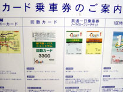 | 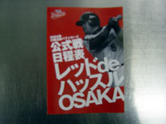 |
| 1日乗車券 | 近鉄パンフ |
大阪ビジネスセンター駅に到着。
4番出口の真上にあるらしい。
ビルの中のIMP HALLを覗いてみる。
小さそうな会場だなあ。さすがにまだ人はいない。
ロッカーは無さそうだ。
| 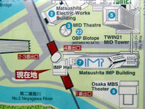 | 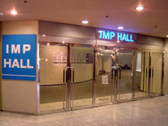 |
| 駅案内図 | ホール入口 |
| 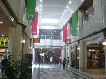 | 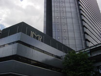 |
| IMPビル内 | IMPビル |
| 大阪城へ |
大阪城を見学することに。
風が冷たいものの快晴だ。
大阪城ホールを発見。
変わった形をしているな。
DTがここで演奏する日は来るのだろうか。
| 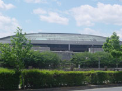 |  |
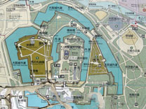 |
| 大阪城ホール | IMP | 大阪城地図 |
Mikiハウスのイベントがあるようで、子供連れが多い。
なかなか城が見えないな〜。
やっと見えた。結構小高い場所に建てられている。
| 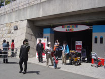 | 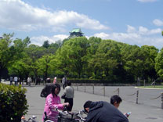 | 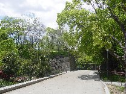 |
| Mikiハウス | 大阪城 | 青屋門へ |
外堀・内堀を通って天守閣へ向かう。
| 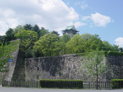 | 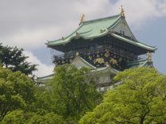 | 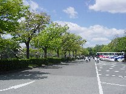 |
| 堀 | 天守閣 | 団体バス |
自販機で入館料を払おうとしたところ、1日乗車券を持っている人は窓口で割引があるらしい。
\600→\500で購入。
| 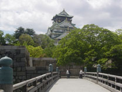 | 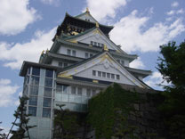 | 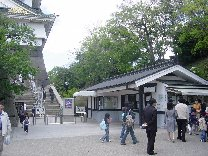 |
| 極楽橋 | 天守閣 | 入館 |
エレベーターでまずは5Fへ。
その後階段で8Fの展望室に。
大阪をぐるっと一望できる。なかなか多彩な風景だ。
| 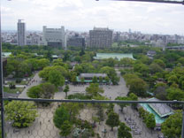 | 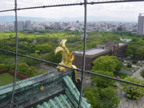 | 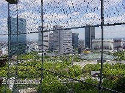 |
| 南側の景色 | 鯱 | IMP&大阪城 |
1階ずつ順に降りて、展示物を見学。
大阪城の歴史ビデオはなかなか面白かった。
落城→再築とドラマチックである。
巨大な桜門の蛸石とか当時どのように建築したのか興味深い。
| 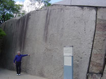 | 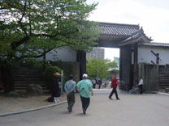 | 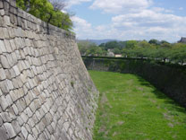 |
| 蛸石 | 桜門 | 堀 |
大手門から出たところで小腹が空いたので、イカ焼きを食べる。
| 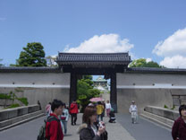 | 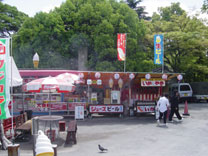 |
| 大手門 | 売店 |
| 空堀へ |
NHK大阪の横を抜けて、谷町6丁目（空掘エリア）へ。
| 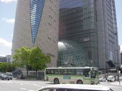 | 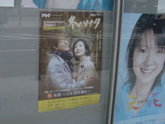 |
| NHK大阪 | 冬のソナタ |
空掘商店街をぶらぶら。
| 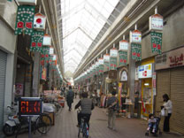 | 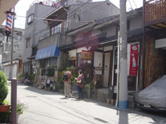 |
| 空掘商店街 | 惣 |
長屋形式の複合ショップ「練」に入る。
変わった空間だ。
ライブラリーカフェ「楽」に入る。
ゆったりした空気が流れる店内に流れる。
楽茶漬け \580を注文。
「ゆったりした時間をお楽しみください」という但し書き通り、なかなか料理が出てこない(^_^;)
ダシ汁仕立てで、味は普通。
| 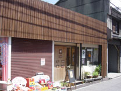 | 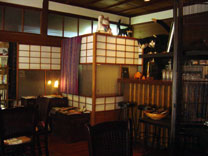 | 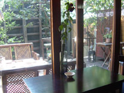 |
| 錬 | 楽店内 | 楽店内 |
| 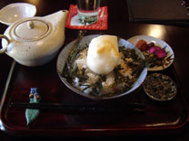 | 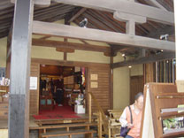 | 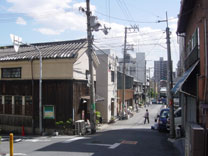 |
| 楽茶漬け | 錬入口 | 錬外観 |
| 大阪ドーム |
日本のプロ野球に興味はないが、大阪ドームを一度見てみたいので野球観戦へ。
松屋町駅から乗車。
新聞を買いたかったのだが、売店がない。
大阪ドーム前千代崎駅で下車。長い駅名だな。
スポーツ新聞を購入。
地上に出ると目の前にドームが。変な形だ。
外野自由席で十分なのだが、ぐるっと回らなければいけないので、内野自由席で妥協。
2000円。近鉄の赤Tシャツなどをもらった。
| 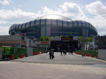 | 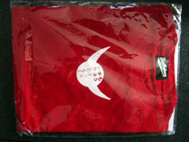 | 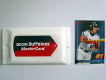 |
| 大阪ドーム | Tシャツ | ウェットティッシュとカード |
自由席はそこそこ埋まっているが、指定席は閑散としている。
 |
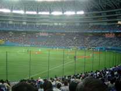 |
| 1回裏 | 近鉄攻撃中 |
天井の形が独特だ。
東京ドームより音響は良さそうな感じ。
1回裏の近鉄が攻撃中。
4番中村の打席だが凡退。
応援団は外野中心で古めかしいスタイルだ。
内野席の前の網は必要なのだろうか？
| 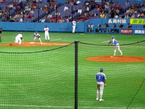 | 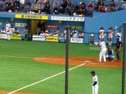 | 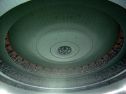 |
| 牽制 | 中村 | 天井 |
試合は投手戦で全く面白くない。
新聞やメールを見たりしていたが、結局途中で帰る。
| 大阪散策 |
本屋に寄った後に道頓堀へ。
 |
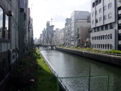 | 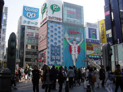 |
| 道頓堀 | 道頓堀 | グリコ |
道頓堀を清掃していた。
今年の阪神は期待できなさそうだが、オリンピックとかで飛び込む人はいるかも。
| 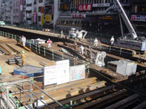 |
| 清掃中 |
心斎橋のホテルに戻り、荷物を受け取る。
16:35
御堂筋線で梅田駅へ。
みどりの窓口で夜行バスを予約しておく。
大阪23:30発の東京行。\8610
コインロッカーに荷物を入れる。
| 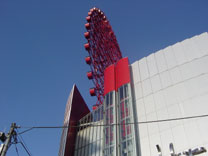 |
| 観覧車 |
ちょっとウロウロした後、ライブ会場へ。
| 大阪IMP公演 第一部 |
17:55
大阪ビジネスセンター到着。ダフ屋は見当たらない。
入場が始まっている。
慌てずに、１Fでお好み焼を食べる。
18:20
入場。やはりロッカーは無い。
場内に入ると、既にほぼ満員だった。
とりあえず後ろから4列目位の場所をキープする。
あれれ、BGMがコンテスト曲じゃないぞ。
聴き覚えの無い曲だ。
さて、会場規模はチッタとZEPPの中間位か。（2F席は無いが）
正面を見ると、ムムッなんと3面スクリーンが無い！
通常だと白いスクリーンが見えるはずだが、真っ黒。
暗幕とかで隠しているのではと凝視するが、本当に何も無い。ガビーン。
スクリーンがあればこそ今日は後ろでもいいと思っていたのだが、甘かった。
しかもステージがかなり低そう。
身長約180cmの私でも良く見えない感じ。
こんなことなら真面目に早く来場するんだった。
演奏が始まったらもう少し前に行くか。
18:30
お馴染みのコンテスト曲のフレーズが流れ、やはり定時スタートか！
一気にヒートアップする場内。
と思ったら、そのままコンテスト曲が続き、肩透かし。
まだローディがステージ上をうろうろしており、もう少し時間が掛かりそう。
この曲は素人とは思えない出来ではあるが、さすがにこの状況では早く終われ〜という感じ。
しかし、10分以上延々と続く。
18:42
今度こそ例のフレーズからオーケスティックな曲に（サイコのテーマらしい）。
18:44
場内暗転。
今日はヒストリービデオ上映が不可能なので、オープニングは果たしてどうするか？
あくまでAs I Am に拘るか、昨夏のようにOVERTURE 1928、グラプリあたりか。
果たしてノイズ音とともに鐘の音が！
The Glass Prisonは久しぶりだなあ。
メンバー登場。
この曲は出だしの照明が暗いので、ほとんど見えない。
予想以上に見えない。これは困った。
かろうじてマイキーが昨日とは一転して白で統一しているのが分かる。
他のメンバーは黒のまま。
それにしてもステージが低すぎる。
ペトルーシもマイアングも右手の動きは全く見えない。
演奏が始まっても意外に周りにスペースが出来ない。
よく見るとブロックで仕切られているので、前になだれ込んだりしないようだ。
ラブリエ登場。
黒のノースリーブでちょっとワイルドな感じ。
「Hi！、Hi！」
さすがに今日はスタンディングだけあって全体に盛り上がっている。
ただ、周りの客はあまりに見えないので、静観している感じ。
「Come on, Osaka!」マイキーのマイク音がやたらとでかい。
「コンバンハ、Osaka」といつもの挨拶をするラブリエ。
インストパートでマイアングとペトルーシが並ぶと、大歓声だ。
考えてみれば、今回のツアーではこういう絡みはほとんどなかった気がする。
今日はベースも良く聞こえる。
エンディングにそのまま続けてThis Dying Soulへ。
グラプリの続編と言われるこの曲へと繋げてきた。
こうして聞くと、As I Amから繋げるよりも遥かに自然で、しっくりくる。
「コンバンハ、Osaka！」
ラブリエのMCは聞き取れず。
マイキーが3本指を掲げているので、3時間宣言したのかな。
「Image & Words！」とともにUnder a Glass Moonへ。
今日のラブリエは素晴らしい。
なにか日増しに良くなっていくような気がする。
「Jordan Rudess！」とともにpiano soloが始まった。
短めの構成で、今まで聴いたこと無いかも。
Through My Words〜Fatal Tragedyへ。
ラブリエのかすれた声が情感たっぷりだ。
思いっきりジャンプするラブリエ。
やっぱりMP2はイイ。
ペトのソロからEndless Sacrificeが始まった。
スペシャルデーでもこの曲は外せないようだ。
またKeyの音が大きくなったかな。
いかん、定番曲で油断したのか、ちょっと眠くなってきた。
頑張れ俺。
ジョーダンのキーボードからErotomaniaが始まった。
今日3部作A Mind Beside Itselfをやるのは予想通り。
もっともスクリーンが無いのは予定外だが。
マイキーはスティックキャッチを外しまくり、3回ほどワザと放る。
いつも疑問に思うが、マイキーは本当に下手なのか、わざと盛り上げているのか？
その後、ローディとの遠投キャッチは一発成功。
そしてまたミスを繰り返して、スティックが無くなっちゃったよと左手を上げる。
後ろのローディからスティックを受け取って続行。
Voices、SilentManへ。
ペトルーシとの掛け合いパートでジョーダン弾きまくり。
ラストでラブリエはオリジナルキーにトライしたのでは。
ちょっとかすれたけどイイ！
In the Name of Godへ。
今日はHonor Thy Fatherだと思ったが、やはりこっちか。
いつの間にかマイキーはバンダナを外していた。
今日は割と左右のスイングも揃った。
やっぱりスタンディングだと上手くいくのかな？
武道館はどうなるのだろう。
オーオーオーの合唱パートで客に音階を指揮するラブリエ。
20:15
第一部終了。
今日はスクリーンが無いので、ラブリエが15分休憩を告げる。
| 大阪IMP公演 第二部 |
ロビーに出ると、黒Tシャツ値上げの告知が貼ってあった。
アーティスト側の意向により、\3500→\4000だと。
ヨーロッパLegでも黒Tだけ高かったので、これが正常なのかもしれないが後味悪い。
前のブロックに移動したかったのだが、通行止めになっている。
どういう風にブロック割りしているのだろうか？
とりあえず1つ前のブロックには移動できた。
大阪人というか最近の若者は体力が無いのか、座っている人が多くて邪魔。
さっきよりはだいぶマシになったものの、まだ下のほうは見えない。
20:25
まもなく開演のアナウンスが流れる。
20:32
暗転。さて、注目のカヴァー完全再現タイムだ。
ここ何ヶ月かこの話題で引っ張ってきたからな〜。
本命Rushかプログレ系かメタル系なのか。
聞き覚えのあるSEが流れてきた。
「〜devil's land〜」
えぇぇぇぇぇぇ！！！ 思わず声を発してしまった。
メイデンかよ！しかも今更666とは。
周りではまだ分かっていない奴もいるが、大ショック！！
嘘でしょ。嘘と言ってくれ。
メイデンは大好きだけど、666はロンドン・パリで体験済なんだよ。（【2002英仏Live! 】参照）
企画物を3回も見てどうするの。あー、なんか眩暈がしてきた。
SEが終わり、Invadersが始まった。いや、始まってしまった。
周りはヤッターという人もいれば、またかよという反応もある。
まあ人それぞれだが、始まってしまえば盛り上がらないわけはない。
床が揺れている。
ラブリエは前回よりも声が伸びているので、逆にブルースディッキンソンらしさは減ってしまったかな。
まだライブを楽しめずに、意味も無く自問自答を繰り返してしまう。
あ〜神様、何か悪いことしましたか？
仕事を休んだからですか？
メイデンフェスに行けなかったからですか？
RushのDVDを見終わっていないからですか？
ていうか、カヴァーアルバムのアンケートは何だったの？
という感じですっかり虚脱してしまった。
でももしかしたら、アルバム完全再現ではないかもしれない。
ちょうどスクリーンがないから、パロディジャケットも映っていないし。
そうだ、メイデンベストに違いない。
などの妄想も虚しく、Children of the Damned が始まった。
これでとうとうアルバム完全再現が確定してしまった。
なんとか気を取り直して楽しまねば。
マイキーがこぼしたスティックを客に渡すラブリエ。
冷静になってみるとサウンドは良い。
ロンドン・パリはサウンド的にはイマイチだったので、オフィシャルブート用の再収録なのだろうか。
The Prisoner へ。
今回もラブリエはプロンターをちらちら見ているが、以前ほどではない感じ。
音が良いせいか、器材が違うからか、インストパートも以前よりパワフルになっている気がする。
22 Acacia Avenue へ。
ここまで気が付かなかったが、マイキーはMaidenのTシャツに着替えていた。
メイデンのロゴは見えるが、デザインは判別できず。
バンダナも黒に取り替えている。
ジョーダンはキーボードソロというかギターソロをプレイ。
タイトル曲The Number of the Beast へ。
「イェーーー！」「6,6,6!」
かなり盛り上がってきた。
そして、Run to the Hills へ。
スティーブハリスばりのベースのザクザク感が堪らない。
今日最高の盛り上がりを見せた。
Ganglandへ。
今回もジャズアレンジだった。
ジョーダンはキレキレ。
前回よりもテンポが良くなっている。
ラストのHallowed Be Thy Nameへ。
もう完璧。
オフィシャルブートでもなんでも出してください。
「ドモアリガト！GoodNight，Osaka！」
21:16
カヴァー終了。
第二部がメイデンで短時間だったので、アンコールの時間はまだたっぷりある。
ということはACOSかな？何となくそんな気がする。
でもビデオがないので、Dead Poets Societyは使えないし。
と考えていると、ペトルーシがあのフレーズを弾き出した！
やはりA Change of Seasonsだ。ビデオがないのはちと寂しいけど。
インストのメロディに合わせて、オーオーオーの歓声が上がる。
これは予想外の反応だ。
やはりACOSのユニゾンは痺れる！
ラブリエも絶好調で完璧な出来と言っていいだろう。
「ドモアリガトウ、OSAKA！」
「Comeback Soon！」
「Thank You , Good night！」
21:40
前の若者がメンバー名を大声で連呼。若いっていいね。
「Hi, Hi, Hi」とまだ興奮が冷め止まない場内。
もう1曲やる時間はありそうな気もするが・・
結局そのまま並んで礼。
メンバーは満足そうだ。マイキーのコメントは無し。
帰る時にDVDクルーが客席を撮影していた。
頭くらいは映ったかも。
それにしても今日は意外なことばかり。
まずスクリーンが無かったこと。これはウドーの会場選択ミスか。
スクリーン無しでも十分だけど、やっぱり今回ツアーの目玉の一つだから残念。
そして、まさかのメイデンカヴァー。ショックと言う他ない。
また、昨日とは違って全体にメンバーはクールな進行だった。
どちらかといえば、昨日のステージングのほうがスペシャルな雰囲気があった。
ACOSを見れたので、終わり良ければ全て良し、と自分を無理矢理納得させる。
| 4/24/2004 Osaka, Japan Venue: IMP Hall Set List: 1. The Glass Prison 2. This Dying Soul 3. Under a Glass Moon 4. piano solo 5. Through My Words 6. Fatal Tragedy 7. Endless Sacrifice A Mind Beside Itself: 8. I Erotomania 9. II Voices (abridged) 10. III The Silent Man (electric version) 11. In the Name of God ~~~intermission~~~ 12. Invaders (Iron Maiden) 13. Children of the Damned (Iron Maiden) 14. The Prisoner (Iron Maiden) 15. 22 Acacia Avenue (Iron Maiden) 16. The Number of the Beast (Iron Maiden) 17. Run to the Hills (Iron Maiden) 18. Gangland (jazz/blues version) (Iron Maiden) 19. Hallowed Be Thy Name (Iron Maiden) ~~~encore~~~ A Change of Seasons: 20. I The Crimson Sunrise 21. II Innocence 22. III Carpe Diem 23. IV The Darkest of Winters 24. V Another World 25. VI The Inevitable Summer 26. VII The Crimson Sunset Notes: There was no video show for this show as it was a small club that could not manage DT's rig. So there was no band history video intro, nor the Dead Poet's Society intro to ACoS. |
| 夜行バス |
京橋駅からJRで大阪駅へ。
予想よりも早く終わったので、バスの時間を23:00発に変更する。
最終バスは満席になっていた。
コンビニで買出し。
| 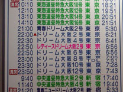 | 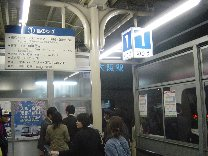 |
| 満席 | バス乗り場 |
日本の夜行バスは初めてだ。
座席は1-1-1配列なので、隣に気兼ねなく寝られる。
23:04
発車。
大阪市内〜名神〜東名〜東京へと向かう。
24:35
多賀SAで休憩。
26:05
三ケ日SAでドライバー交代。休憩は無し。
05:03
足柄SAで休憩。いまだショックであまり寝れず。